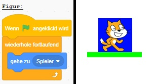

Wie lässt man eine Spielfigur springen und Levels erreichen - Version 9
Da das Springen funktioniert, können wir die eigentliche Spielfigur verwenden.
- Wir erstellen eine neue Figur mit der eigentlichen Spielfigur
- Die neue Figur Figur folgt der anderen Figur, damit sie sich gleich verhält
